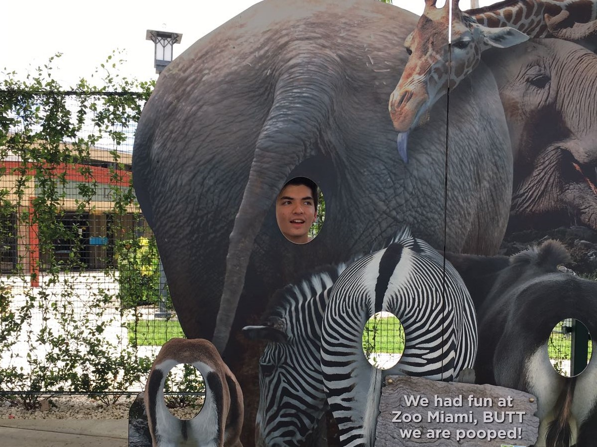

BIO
I'm a second year undergraduate student in the Frost School of Music at the University of Miami studying classical guitar, music business, and interactive media. I'm passionate about music, web development, communication, and dogs. I was born in Singapore to a Malaysian mother and American father, and grew up in Miami immersed in a Latin environment. I love learning about different cultures, exploring, experimenting, and traveling.